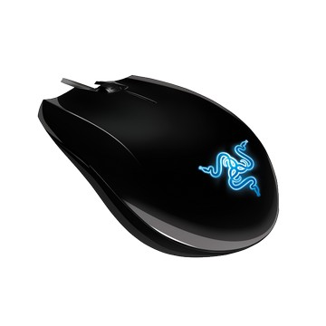

Razer Abyssus 地獄狂蛇滑鼠 |
- 商品預覽
- 產品規格
- 參考資料
|  | Razer Abyssus 地獄狂蛇滑鼠
◆鏡面烤漆 本商品資訊取自:Pchome24
|
|---|


•3500dpi Razer Precision3.5G紅外線感應器
•1000Hz Ultrapolling / 1ms響應時間
•機械dpi/刷新率切換
•On-The-Fly Sensitivity即時靈敏度微調
•Always-On永久連接模式
•超大型防滑按鈕
•16位超寬數據通道
•60-120英寸/秒和15g加速度
•三個可獨立編輯Hyperesponse按鍵
•雙手通用型設計
•具有24個獨立點擊位置的滾輪
•超靜Ultraslick 鼠腳
•7 英尺輕型無纏結編織線纜
•大概尺寸（毫米計）115(長) x 63(寬) x 40(高)
系統與硬體需求：
•附 USB 連接埠的 PC/Mac
•Windows® 7 / Windows Vista® / Windows® XP或 Mac OS X (v10.4 ~ v10.6)
•網際網路連線 (用於驅動下載)
•至少 35MB 硬碟空間
BSMI證書號碼:CI328064110200號00